Aims
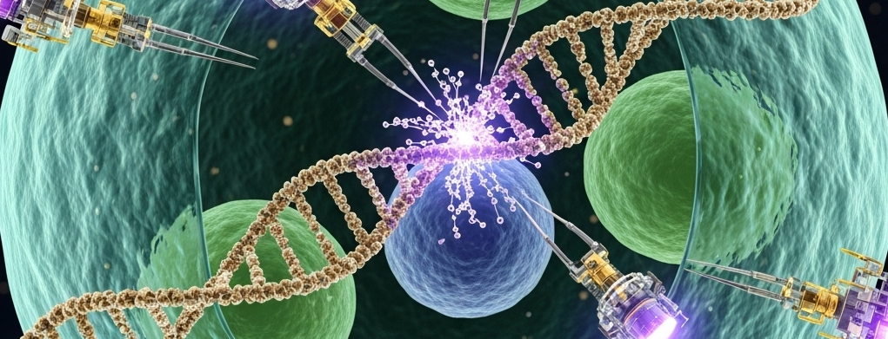
Upon completion of the course, the student will be able to acquire foundational knowledge and analytical skills. These assets will be key for the development of innovative solutions in the medical field using biomedical engineering tools. The course aims at developing the ability to critically evaluate and apply cutting-edge methodologies in design and optimization of medical technologies. It will prepare future bioengineers to face complex challenges in the sector of innovative and translational medicine.
Prerequisites: The course requires students to have basic knowledge and analytical skills that are considered necessary for a successful learning experience. Specifically, students should have already acquired:
- A solid understanding of the fundamental principles of applied mathematics, physics, and biological sciences (e.g., cell biology, physiology, biochemistry).
- Competence in basic engineering concepts and methods, relevant for quantitative analysis and problem-solving.
- The ability to critically interpret scientific data and apply quantitative reasoning to complex biological and medical problems.
These prerequisites are generally gained during a bachelor's degree in engineering, biomedical sciences, or a related scientific field.
Schedule
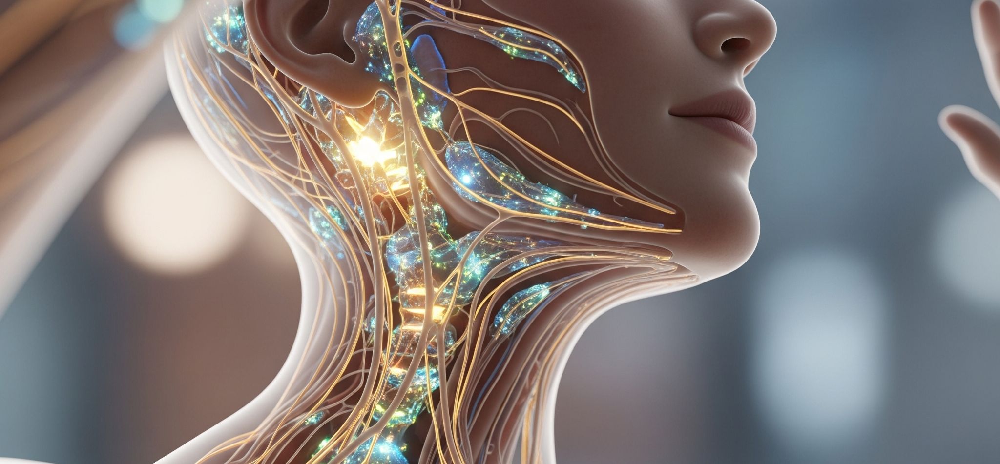
From Brain Cells Neuroanatomy to Augmented & Virtual Reality for clinics
Speaker: Prof. Corrado Cali, PhD, University of Turin and IntraVides, Italy
Date/Time: Friday, 10th October 2025, 08:00-13:00
Location: Mirandola- Master in Bioengineering - Colloquia in Bioengineering
Translational Neuroengineering: the future of Neuroprosthetics for bioengineering
Speaker: Prof. Silvestro Micera, PhD, from EPFL - Swiss Federal Institute of Technology of Lausanne
Date/Time: Friday, 17th October 2025, 8:00-13:00
Location: Mirandola-Master in Bioengineering - Colloquia in Bioengineering
Neuro-nanotechnologies, graphene, and novel opportunities for drug delivery
Speaker: Audrey Franceschi Biagioni, PhD, from International School of Advanced Studies - SISSA
Date/Time: Friday, 24th October 2025, 8:00-13:00
Location: Mirandola- Master in Bioengineering - Colloquia in Bioengineering
Organ-on-a-chip technologies: from research to entrepreneurship
Speaker: Silvia Scaglione, PhD, Consiglio Nazionale delle Ricerche and React4life, Italy
Date/Time: Friday, 7th November 2025, 8:00-13:00
Location: Mirandola-Master in Bioengineering - Colloquia in Bioengineering
Implanted Brain-Computer-Interfaces - from science-fiction to reality
Speaker: Bálint Várkuti, PhD, CEO of Ceregate, Germany
Date/Time: Friday, 14th November 2025, 8:00-13:00
Location: Mirandola-Master in Bioengineering - Colloquia in Bioengineering
Continuous glucose monitoring systems for diabetes management
Speaker: Stefania Wheatley, PhD, former Director of Scientific Affairs at Dexcom UK
Date/Time: Friday, 21st November 2025, 8:00-13:00
Location: Mirandola-Master in Bioengineering - Colloquia in Bioengineering
Cochlear implants and Nerve Interfacing
Speaker: Enrico Donà, PhD, MED-EL Medical Electronics - Austria
Date/Time: Friday, 28th November 2025, 8:00-13:00
Location: Mirandola-Master in Bioengineering - Colloquia in Bioengineering
Electro-cellular interfaces for Ophthalmology and visual neuroscience
Speaker: Prof. Yossi Mandel, PhD, Professor at Bar-Ilan University
Date/Time: Friday, 5th December 2025, 8:00-13:00
Location: Mirandola-Master in Bioengineering - Colloquia in Bioengineering
Biosignal monitoring and vitals tracking
Speaker: Ing. Matteo Corradini, Engineer and Entrepreneur
Date/Time: Friday, 12th December 2025, 8:00-13:00
Location: Mirandola- Master in Bioengineering - Colloquia in Bioengineering
Retinal Prosthetics and Medical Devices
Speaker: Maura Arsiero, PhD, Bioengineer and frontiers medical device expert
Date/Time: Friday, 19th December 2025, 8:00-13:00
Location: Mirandola-Master in Bioengineering - Colloquia in Bioengineering
In class: classes start at 9:00 (sharp) in Mirandola, and continue until lunch time. A shuttle bus - to be confirmed - is organised free of charge for you from Via Campi at 8:00am (ask Prof. Michele GIUGLIANO).
It is compulsory each of you prepares at least 2 questions for the speaker, every time. Ask your questions! Do not be shy. You have the opportunity to talk and spend formal and informal time with leaders, academic, professionals, and entrepreneurs: use this opportunity to ask about their career choices, about the academic trajectory, about what they would do if they could go back in time. The Speakers are available for the entire morning, and it is your responsibility to take as much as possible from these meetings.
content
"Colloquia in Bioengineering" course is delivered as a series of lectures followed by interactive discussions, led by prominent national and international experts from academia, industry, and clinical practice. Besides a formal talk, each session typically includes an extensive opportunity for questions and answers. This offers a comprehensive perspective on cutting-edge advancements and the translational pathway of biomedical innovation, encompassing the technical, academic, and entrepreneurial aspects of a career in Bioengineering.
I. Advanced Bio-interfaces, Diagnostics, and Sensory Restoration
This macro-topic explores the latest advancements in medical diagnostics, real-time physiological monitoring, and technologies designed to interface directly with biological systems or restore sensory functions. Specific areas and in-depth discussions by speakers will include:
-
Neuroengineering and Neuroprosthetics: Focusing on advanced interfaces and therapeutic applications.
-
Cochlear Implants and Nerve Interfacing: Technologies for auditory and neural stimulation and their clinical applications.
-
Ophthalmology, Visual Neuroscience, and Retinal Prosthetics: Exploring electro-cellular interfaces and medical technologies for vision restoration.
-
Advanced Biosensing and Monitoring Systems: Including the development and impact of continuous glucose monitoring (CGM) systems for diabetes management and innovations in biosignal and vital parameter monitoring.
II. Innovative Therapies in Bioengineering and Translational Medicine
This section examines emerging therapeutic strategies, advanced biological models for research, and the critical path of medical innovation from scientific discovery to patient care. Key discussions and guest perspectives will cover:
-
Organ-on-a-chip Technologies: Their application in disease modeling, drug discovery, and personalized medicine.
-
Therapeutic Strategies and Central Nervous System Gene Therapy: Including a practical "reality check" on the topic of "Bringing medical innovation to patients".
-
Augmented Reality for Surgery: The application of immersive technologies to enhance surgical precision and training.
III. Innovation, Entrepreneurship, and the Regulatory Landscape in Bioengineering
This macro-topic delves into the entrepreneurial ecosystem within the MedTech sector, the process of medical device development, and essential regulatory and commercialization pathways. Discussions will cover:
-
Entrepreneurship in Bioengineering: Case studies and practical insights on starting and growing companies in the biomedical field.
-
Medical Device Development and Regulatory Pathways: The life cycle of medical devices from concept to market access.
-
Bringing Medical Innovation to Patients: Industrial Perspectives: Practical challenges and strategies for clinical translation, intellectual property, and market realities.
-
Startup Innovation in Biosignal and Vital Parameter Monitoring: The entrepreneurial journey in the development and commercialization of monitoring technologies.
Evaluation Methods
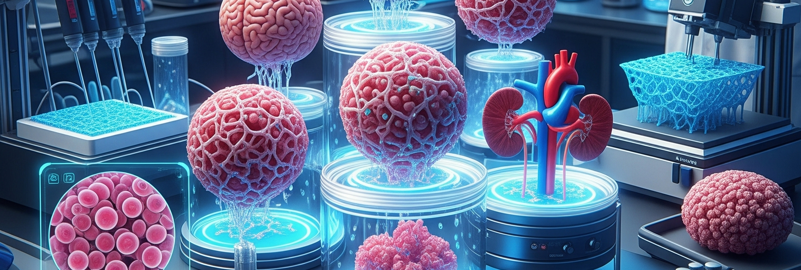
The "Colloquia in Bioengineering" course includes an oral presentation for evaluation. Each student must prepare and give a 30-minute PowerPoint presentation on a topic chosen from the themes covered by the guest speakers during the course. This method allows for the evaluation of the student's ability to apply acquired knowledge and understanding, exercise autonomous judgment, and demonstrate effective communication skills, in line with the expected learning objectives. The presentation will be followed by a dedicated question and answer session, aimed at deepening the student's understanding and critical thinking.
Timing
Location: The evaluation will take place at the end of the teaching period, during the official exam sessions.
Duration: Each student's presentation will have an approximate duration of 30 minutes, including the subsequent question and answer session.
Scoring Criteria for the Final Grade
The final grade will be based on the following criteria and their respective weights:
- Content and Depth of Knowledge (40%): Evaluates the student's ability to thoroughly understand the chosen topic, demonstrate a solid command of technical concepts, and integrate insights from guest lectures and relevant literature.
- Application and Critical Analysis (30%): Evaluates the student's ability to apply acquired knowledge, critically analyze the chosen topic, and, if applicable, propose original perspectives or solutions within the context of bioengineering.
- Presentation and Communication Skills (20%): Evaluates the clarity, coherence, and effectiveness of the oral presentation, including the logical structure of the content, visual aids, and the ability to articulate complex ideas clearly and concisely.
- Participation and Responsiveness During Q&A (10%): Measures the student's ability to engage in discussion, answer questions accurately, and defend the arguments presented.
A minimum score of 18/30 is required to pass the exam, indicating a reasonably sufficient preparation in terms of both content and expressive language.
Useful and Permitted Materials for the Exam
Students are required to consult course materials, including slides from guest speakers' lectures, recommended readings, and external scientific literature (journal articles, conference proceedings, textbooks) relevant to the chosen presentation topic. The use of PowerPoint software for the presentation and any necessary multimedia tools (e.g., for embedding videos) is permitted and encouraged to enhance the clarity and impact of the presentation.
Speakers
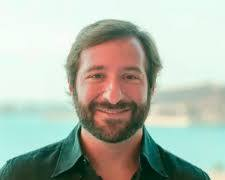
Prof. Corrado Cali, PhD
University of Turin and IntraVides, Italy
He trained as an electronic engineer at Politecnico di Torino before working in computational neuroscience at EPFL. He earned a doctoral degree in 2012, with a focus on brain physiology and astroglia cells. After a postdoctoral fellowship, he joined the University of Turin in 2020. In 2021, he founded IntraVides, a startup that develops augmented and virtual reality tools for clinical applications.
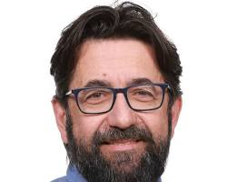
Prof. Silvestro Micera, PhD
EPFL - Swiss Federal Institute of Technology of Lausanne
He received a university degree in Electrical Engineering in 1996 and a PhD in Biomedical Engineering in 2000. He was a visiting scientist at the Massachusetts Institute of Technology with a Fulbright Scholarship. From 2008 to 2011, he was the head of the Neuroprosthesis Control group at the Swiss Federal Institute of Technology in Zurich. He has received two awards from the IEEE Engineering in Medicine and Biology Society .
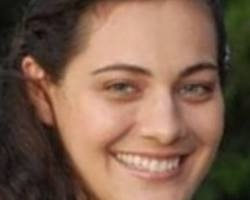
Audrey Franceschi Biagioni, PhD
International School of Advanced Studies - SISSA
She graduated in Pharmacy in 2006 and holds a Doctorate and Master's in Biological Sciences, with a concentration in Pharmacology. She completed postdoctoral training in Psychiatry and Neurobiology, including an internship at SISSA. She currently holds a senior postdoctoral position at SISSA, focusing on neuroscience and nanoscience, and is developing new technologies for drug delivery to treat long-term conditions.
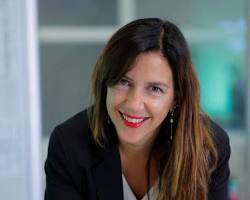
Silvia Scaglione, PhD
Consiglio Nazionale delle Ricerche & React4life, Italy
She earned a PhD in Bioengineering from the University of Genoa in 2005. She is the head of the Laboratory of Tissue Engineering and has been the principal investigator of a FET-OPEN H2020 project. She is the inventor of seven patents and a senior researcher at the Consiglio Nazionale delle Ricerche (CNR).
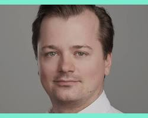
Bálint Várkuti, PhD
CEO of Ceregate, Germany
He is the co-founder and CEO of CereGate GmbH, a neurotechnology company developing neural interfaces. Under his leadership, CereGate's Deep Brain Stimulation therapy received FDA Breakthrough Designation. He previously served as the Global Director of Functional and Stereotactic Neurosurgery at Brainlab. He earned a PhD in Neuroscience from the Max Planck Graduate School and a Diploma in Psychology from the Albert-Ludwigs-University in Freiburg.
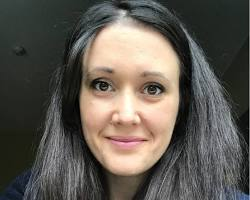
Stefania Guerra, PhD
Director of Scientific Affairs at Dexcom UK
She is the Director of Scientific Affairs at Dexcom and was previously a Senior Manager of Clinical Science Liaison. She holds a PhD from the University of Padova, where her research focused on continuous glucose monitoring signal analysis and mathematical modeling. Her career has centered on the medical device field, including a role as a Field Clinical Engineer for retinal prostheses systems at Second Sight Medical Products.
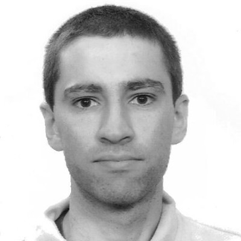
Enrico Donà, PhD
MED-EL Medical Electronics - Austria
He is a Senior Development Engineer at MED-EL, where he is involved in the electronics development for cochlear implants. He has also lectured on "RF Technology" at MCI | The Entrepreneurial School®. His experience includes roles as a Reliability Engineer at Infineon Technologies and an R&D Engineer at D. Swarovski. He holds a PhD in Physics from Universität Innsbruck.
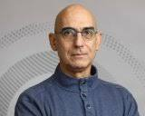
Prof. Yossi Mandel, PhD
Professor at Bar-Ilan University
He is an ophthalmologist and eye surgeon with a PhD in Bioengineering. He is the head of the Ophthalmic Science and Engineering Lab and the School of Optometry and Vision Science at Bar-Ilan University. His research focuses on ophthalmic engineering, including retinal prostheses and microfluidics implants, and he received an ERC grant for his work on a hybrid retinal implant.
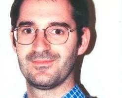
Ing. Matteo Corradini
Engineer and Entrepreneur
He is the founder of Vital Signals in a Touch (VST srl), a spin-off from the University of Modena and Reggio Emilia. His company developed `Ippocratech®Care`, a non-invasive solution for monitoring five vital parameters: heart rate, respiratory rate, body temperature, blood pressure, and blood oxygenation. The company recently received a significant investment of 3 million Euros.
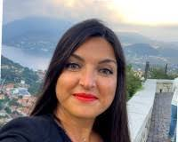
Maura Arsiero, PhD
Bioengineer and Frontiers Medical Device Expert
She holds a PhD in Neuroscience from the University of Bern and a Master's in biomedical engineering from the University of Genoa. Her career has a significant emphasis on surgical and ophthalmic products within the medical device sector. She is currently the Head of Marketing, Surgical, at Bausch + Lomb Italia, and has held several key positions at BVI Medical and Second Sight Medical Products.